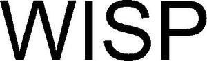

Trade Mark Journal No.2025/034 22 August 2025
WO0000001855679 (9,42,45)
Office of origin: Israel
Date of International Registration:20 February 2025
Date of designation in the UK:
20 February 2025

- Class 9
- Portable detection and identification instruments using light sources and light detectors for detecting and identifying chemical and biological substances not for medical purposes; portable sensors, detectors and monitoring instruments, for detecting and identifying chemical and biological substances not for medical purposes; optical sensors using laser light for detecting and identifying chemical and biological substances not for medical purposes; hand-held optical scanners for detecting and identifying chemical and biological substances not for medical purposes; safety and life-saving apparatus and equipment, namely sensors and detectors for identifying chemical and biological substances; photo electron spectroscopy analyzers, not for medical purposes; downloadable computer software and firmware for the purpose of detecting and identifying the presence of certain substances in liquids and managing data relating to the same; scientific devices for detecting the presence of chemical compounds in liquids; diagnostic apparatus for detecting and identifying the presence of certain substances in liquids, not for medic diagnostic apparatus for detecting and identifying the presence of certain substances in liquids, not for medical purposes; computer hardware and downloadable software for performing optical diagnostics, by using laser light for detecting and identifying chemical and biological substances and managing data relating to the same; downloadable computer and smartphones software applications for detecting and identifying the presence of certain substances in liquids and managing data relating to the same; downloadable application software for wireless devices used for detecting and identifying the presence of certain substances in liquids; downloadable computer software applications for use with artificial intelligence for the purpose of detecting and identifying the presence of certain substances in liquids and managing data relating to the same; apparatus for processing data related to the presence of certain substances in liquids; downloadable computer software for processing of data related to the presence of chemical and biological substances in liquids; downloadable computer software platforms featuring data related to detecting and identifying chemical and biological substances in liquids; downloadable computer and smartphone software using artificial intelligence for analysis of data related to safety, namely detecting and identifying chemical and biological substances in liquids.
- Class 42
- Software as a service (SAAS) services, namely, hosting software for use by others for detecting and identifying the presence of certain substances in liquids and managing data relating to the same; providing a technology that enables users to detect and identify the presence of certain substances in liquids and managing data relating to the same via a website; design and development of consumer products, namely devices and apparatus for detecting and identifying the presence of chemical and biological substances in liquids, for the purpose of personal safety; application service provider [ASP] services, featuring software that enables users, when used with suitable hardware, to detect and identify the presence of certain substances in liquids and managing data relating to the same; development and design of mobile phones software application which enable users to detect and identify the presence of certain substances in liquids, and manage data relating to the same; platform as a service [PaaS] featuring computer software platforms for detecting and identifying chemical and biological substances and managing data relating to the same; chemical analysis services for use in the testing of liquids for detecting and identifying the presence of chemical and biological substances.
- Class 45
- Providing information and consulting services in the field of public and personal safety.
Get Wisp Ltd.
Representative: Naschitz, Brandes, Amir & Co., Advocates, 5 Tuval Street, 6789717 Tel-Aviv, ISRAEL